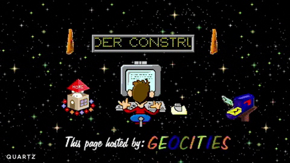
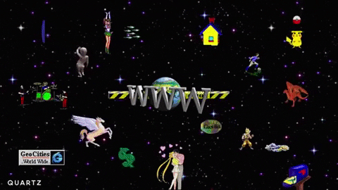

Bem-vindo a este incrível site dos anos 90!
Os sites nos anos 90 eram repletos de cores e imagens!
Uma boa quantidade de sites da época não era muito conhecida por ter padrão .
A não ser que o padrão fosse "não ter padrão" :)
Talvez pela falta de contéudo, talvez pela falta de elementos e efeitos disponíveis no HTML e no CSS, as páginas usavam muitos fundos!